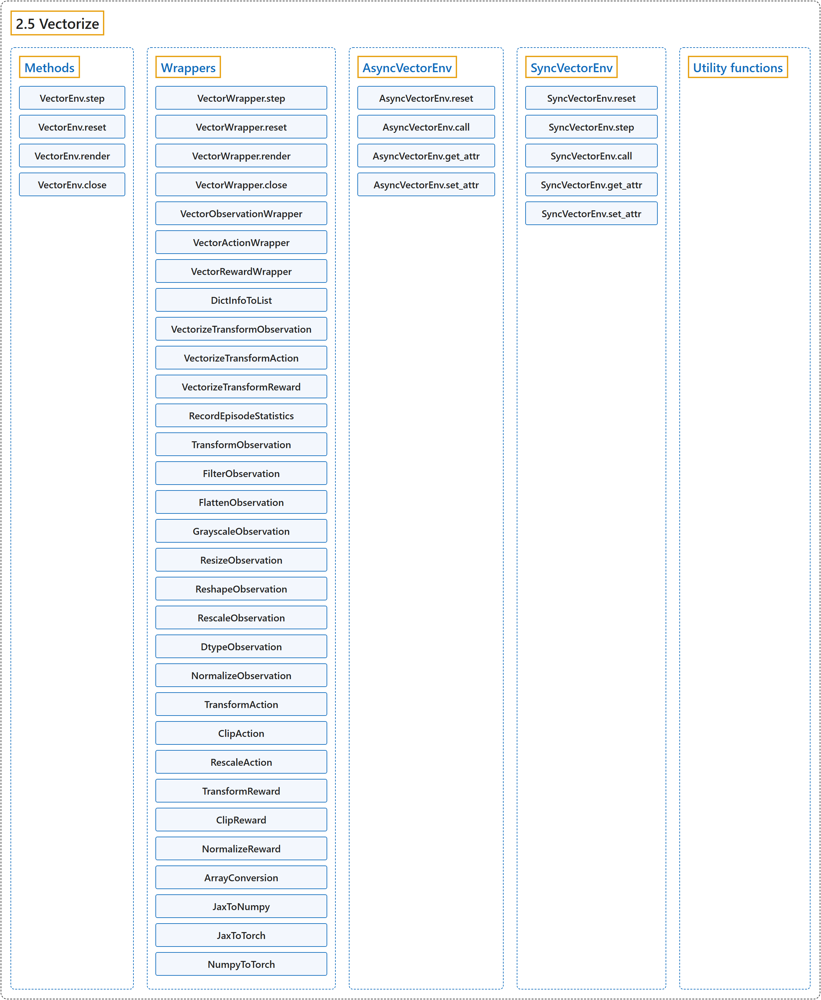

2.5 Vectorize
Classification

Glossary
| Term | Definition | 中文翻译 | Source |
|---|---|---|---|
| 2.5 Vectorize 向量化 |
(context) "Base class for vectorized environments to run multiple independent copies of the same environment in parallel." | （语境）向量化环境的基类，用于并行运行同一环境的多个独立副本。 | Farama Foundation, n.d.-d, "gymnasium.vector.VectorEnv", para. 1 |
| Methods 方法 |
(No definition) | （无定义） | Farama Foundation, n.d.-d, "Methods" |
| VectorEnv.step step 方法 |
"Take an action for each parallel environment." | 为每个并行环境执行一个动作。 | Farama Foundation, n.d.-d, "gymnasium.vector.VectorEnv.step", para. 1 |
| VectorEnv.reset reset 方法 |
"Reset all parallel environments and return a batch of initial observations and info." | 重置所有并行环境，并返回一批初始观测和信息。 | Farama Foundation, n.d.-d, "gymnasium.vector.VectorEnv.reset", para. 1 |
| VectorEnv.render render 方法 |
"Returns the rendered frames from the parallel environments." | 返回各并行环境渲染出的帧。 | Farama Foundation, n.d.-d, "gymnasium.vector.VectorEnv.render", para. 1 |
| VectorEnv.close close 方法 |
"Close all parallel environments and release resources." | 关闭所有并行环境并释放资源。 | Farama Foundation, n.d.-d, "gymnasium.vector.VectorEnv.close", para. 1 |
| Wrappers 包装器 |
"Wraps the vectorized environment to allow a modular transformation." | 包装向量化环境，以便进行模块化的变换。 | Farama Foundation, n.d.-e, "gymnasium.vector.VectorWrapper", para. 1 |
| VectorWrapper.step step 方法 |
"Step through all environments using the actions returning the batched data." | 用这些动作让所有环境走一步，返回批量数据。 | Farama Foundation, n.d.-e, "gymnasium.vector.VectorWrapper.step", para. 1 |
| VectorWrapper.reset reset 方法 |
"Reset all environment using seed and options." | 用 seed 和 options 重置所有环境。 | Farama Foundation, n.d.-e, "gymnasium.vector.VectorWrapper.reset", para. 1 |
| VectorWrapper.render render 方法 |
"Returns the render mode from the base vector environment." | 返回底层向量环境的渲染模式。 | Farama Foundation, n.d.-e, "gymnasium.vector.VectorWrapper.render", para. 1 |
| VectorWrapper.close close 方法 |
"Close all environments." | 关闭所有环境。 | Farama Foundation, n.d.-e, "gymnasium.vector.VectorWrapper.close", para. 1 |
| VectorObservationWrapper VectorObservationWrapper（向量观测包装器） |
"Wraps the vectorized environment to allow a modular transformation of the observation." | 包装向量化环境，以便对观测进行模块化的变换。 | Farama Foundation, n.d.-e, "gymnasium.vector.VectorObservationWrapper", para. 1 |
| VectorObservationWrapper.observations observations 方法 |
"Defines the vector observation transformation." | 定义向量观测的变换。 | Farama Foundation, n.d.-e, "gymnasium.vector.VectorObservationWrapper.observations", para. 1 |
| VectorActionWrapper VectorActionWrapper（向量动作包装器） |
"Wraps the vectorized environment to allow a modular transformation of the actions." | 包装向量化环境，以便对动作进行模块化的变换。 | Farama Foundation, n.d.-e, "gymnasium.vector.VectorActionWrapper", para. 1 |
| VectorActionWrapper.actions actions 方法 |
"Transform the actions before sending them to the environment." | 在把动作发给环境之前对其进行变换。 | Farama Foundation, n.d.-e, "gymnasium.vector.VectorActionWrapper.actions", para. 1 |
| VectorRewardWrapper VectorRewardWrapper（向量奖励包装器） |
"Wraps the vectorized environment to allow a modular transformation of the reward." | 包装向量化环境，以便对奖励进行模块化的变换。 | Farama Foundation, n.d.-e, "gymnasium.vector.VectorRewardWrapper", para. 1 |
| VectorRewardWrapper.rewards rewards 方法 |
"Transform the reward before returning it." | 在返回奖励之前对其进行变换。 | Farama Foundation, n.d.-e, "gymnasium.vector.VectorRewardWrapper.rewards", para. 1 |
| DictInfoToList DictInfoToList（信息字典转列表包装器） |
"Converts infos of vectorized environments from dict to List[dict]." | 把向量化环境的 infos 从 dict 转换为 List[dict]。 | Farama Foundation, n.d.-e, "gymnasium.wrappers.vector.DictInfoToList", para. 1 |
| VectorizeTransformObservation VectorizeTransformObservation（向量化观测变换包装器） |
"Vectorizes a single-agent transform observation wrapper for vector environments." | 为向量环境向量化一个单智能体的观测变换包装器。 | Farama Foundation, n.d.-e, "gymnasium.wrappers.vector.VectorizeTransformObservation", para. 1 |
| VectorizeTransformAction VectorizeTransformAction（向量化动作变换包装器） |
"Vectorizes a single-agent transform action wrapper for vector environments." | 为向量环境向量化一个单智能体的动作变换包装器。 | Farama Foundation, n.d.-e, "gymnasium.wrappers.vector.VectorizeTransformAction", para. 1 |
| VectorizeTransformReward VectorizeTransformReward（向量化奖励变换包装器） |
"Vectorizes a single-agent transform reward wrapper for vector environments." | 为向量环境向量化一个单智能体的奖励变换包装器。 | Farama Foundation, n.d.-e, "gymnasium.wrappers.vector.VectorizeTransformReward", para. 1 |
| RecordEpisodeStatistics RecordEpisodeStatistics（记录回合统计包装器） |
"This wrapper will keep track of cumulative rewards and episode lengths." | 这个包装器会跟踪累计奖励和回合长度。 | Farama Foundation, n.d.-e, "gymnasium.wrappers.vector.RecordEpisodeStatistics", para. 1 |
| TransformObservation TransformObservation（观测变换包装器） |
"Transforms an observation via a function provided to the wrapper." | 通过提供给包装器的函数变换观测。 | Farama Foundation, n.d.-e, "gymnasium.wrappers.vector.TransformObservation", para. 1 |
| FilterObservation FilterObservation（观测过滤包装器） |
"Vector wrapper for filtering dict or tuple observation spaces." | 用于过滤 dict 或 tuple 观测空间的向量包装器。 | Farama Foundation, n.d.-e, "gymnasium.wrappers.vector.FilterObservation", para. 1 |
| FlattenObservation FlattenObservation（观测展平包装器） |
"Observation wrapper that flattens the observation." | 展平观测的观测包装器。 | Farama Foundation, n.d.-e, "gymnasium.wrappers.vector.FlattenObservation", para. 1 |
| GrayscaleObservation GrayscaleObservation（灰度观测包装器） |
"Observation wrapper that converts an RGB image to grayscale." | 把 RGB 图像转换为灰度图的观测包装器。 | Farama Foundation, n.d.-e, "gymnasium.wrappers.vector.GrayscaleObservation", para. 1 |
| ResizeObservation ResizeObservation（观测尺寸调整包装器） |
"Resizes image observations using OpenCV to shape." | 用 OpenCV 把图像观测调整为 shape。 | Farama Foundation, n.d.-e, "gymnasium.wrappers.vector.ResizeObservation", para. 1 |
| ReshapeObservation ReshapeObservation（观测变形包装器） |
"Reshapes array based observations to shapes." | 把基于数组的观测变形为指定形状。 | Farama Foundation, n.d.-e, "gymnasium.wrappers.vector.ReshapeObservation", para. 1 |
| RescaleObservation RescaleObservation（观测缩放包装器） |
"Linearly rescales observation to between a minimum and maximum value." | 把观测线性缩放到最小值与最大值之间。 | Farama Foundation, n.d.-e, "gymnasium.wrappers.vector.RescaleObservation", para. 1 |
| DtypeObservation DtypeObservation（观测类型转换包装器） |
"Observation wrapper for transforming the dtype of an observation." | 用于转换观测 dtype 的观测包装器。 | Farama Foundation, n.d.-e, "gymnasium.wrappers.vector.DtypeObservation", para. 1 |
| NormalizeObservation NormalizeObservation（观测归一化包装器） |
"This wrapper will normalize observations s.t. each coordinate is centered with unit variance." | 这个包装器会归一化观测，使每个坐标居中且方差为 1。 | Farama Foundation, n.d.-e, "gymnasium.wrappers.vector.NormalizeObservation", para. 1 |
| TransformAction TransformAction（动作变换包装器） |
"Transforms an action via a function provided to the wrapper." | 通过提供给包装器的函数变换动作。 | Farama Foundation, n.d.-e, "gymnasium.wrappers.vector.TransformAction", para. 1 |
| ClipAction ClipAction（动作裁剪包装器） |
"Clip the continuous action within the valid Box observation space bound." | 把连续动作裁剪到合法的 Box 观测空间边界之内。 | Farama Foundation, n.d.-e, "gymnasium.wrappers.vector.ClipAction", para. 1 |
| RescaleAction RescaleAction（动作缩放包装器） |
"Affinely rescales the continuous action space of the environment to the range [min_action, max_action]." | 把环境的连续动作空间仿射缩放到 [min_action, max_action] 范围。 | Farama Foundation, n.d.-e, "gymnasium.wrappers.vector.RescaleAction", para. 1 |
| TransformReward TransformReward（奖励变换包装器） |
"A reward wrapper that allows a custom function to modify the step reward." | 一种奖励包装器，允许用自定义函数修改 step 的奖励。 | Farama Foundation, n.d.-e, "gymnasium.wrappers.vector.TransformReward", para. 1 |
| ClipReward ClipReward（奖励裁剪包装器） |
"A wrapper that clips the rewards for an environment between an upper and lower bound." | 一种包装器，把环境的奖励裁剪到上下界之间。 | Farama Foundation, n.d.-e, "gymnasium.wrappers.vector.ClipReward", para. 1 |
| NormalizeReward NormalizeReward（奖励归一化包装器） |
"This wrapper will scale rewards s.t. their exponential moving average has an approximately fixed variance." | 这个包装器会缩放奖励，使其指数移动平均的方差近似固定。 | Farama Foundation, n.d.-e, "gymnasium.wrappers.vector.NormalizeReward", para. 1 |
| ArrayConversion ArrayConversion（数组转换包装器） |
"Wraps a vector environment returning Array API compatible arrays so that it can be interacted with through a specific framework." | 包装一个返回兼容 Array API 数组的向量环境，使其能通过特定框架交互。 | Farama Foundation, n.d.-e, "gymnasium.wrappers.vector.ArrayConversion", para. 1 |
| JaxToNumpy JaxToNumpy（Jax 转 NumPy 包装器） |
"Wraps a jax vector environment so that it can be interacted with through numpy arrays." | 包装一个 jax 向量环境，使其能通过 numpy 数组交互。 | Farama Foundation, n.d.-e, "gymnasium.wrappers.vector.JaxToNumpy", para. 1 |
| JaxToTorch JaxToTorch（Jax 转 PyTorch 包装器） |
"Wraps a Jax-based vector environment so that it can be interacted with through PyTorch Tensors." | 包装一个基于 Jax 的向量环境，使其能通过 PyTorch 张量交互。 | Farama Foundation, n.d.-e, "gymnasium.wrappers.vector.JaxToTorch", para. 1 |
| NumpyToTorch NumpyToTorch（NumPy 转 PyTorch 包装器） |
"Wraps a numpy-based environment so that it can be interacted with through PyTorch Tensors." | 包装一个基于 numpy 的环境，使其能通过 PyTorch 张量交互。 | Farama Foundation, n.d.-e, "gymnasium.wrappers.vector.NumpyToTorch", para. 1 |
| AsyncVectorEnv 异步向量环境 |
"Vectorized environment that runs multiple environments in parallel." | 并行运行多个环境的向量化环境。 | Farama Foundation, n.d.-a, "gymnasium.vector.AsyncVectorEnv", para. 1 |
| AsyncVectorEnv.reset reset 方法 |
"Resets all sub-environments in parallel and return a batch of concatenated observations and info." | 并行重置所有子环境，并返回一批拼接后的观测和信息。 | Farama Foundation, n.d.-a, "gymnasium.vector.AsyncVectorEnv.reset", para. 1 |
| AsyncVectorEnv.call call 方法 |
"Call a method from each parallel environment with args and kwargs." | 用 args 和 kwargs 调用每个并行环境的一个方法。 | Farama Foundation, n.d.-a, "gymnasium.vector.AsyncVectorEnv.call", para. 1 |
| AsyncVectorEnv.get_attr get_attr 方法 |
"Get a property from each parallel environment." | 从每个并行环境获取一个属性。 | Farama Foundation, n.d.-a, "gymnasium.vector.AsyncVectorEnv.get_attr", para. 1 |
| AsyncVectorEnv.set_attr set_attr 方法 |
"Sets an attribute of the sub-environments." | 设置各子环境的一个属性。 | Farama Foundation, n.d.-a, "gymnasium.vector.AsyncVectorEnv.set_attr", para. 1 |
| SyncVectorEnv 同步向量环境 |
"Vectorized environment that serially runs multiple environments." | 依次串行运行多个环境的向量化环境。 | Farama Foundation, n.d.-b, "gymnasium.vector.SyncVectorEnv", para. 1 |
| SyncVectorEnv.reset reset 方法 |
"Resets each of the sub-environments and concatenate the results together." | 逐个重置子环境，并把结果拼接在一起。 | Farama Foundation, n.d.-b, "gymnasium.vector.SyncVectorEnv.reset", para. 1 |
| SyncVectorEnv.step step 方法 |
"Steps through each of the environments returning the batched results." | 让每个环境逐个走一步，返回批量结果。 | Farama Foundation, n.d.-b, "gymnasium.vector.SyncVectorEnv.step", para. 1 |
| SyncVectorEnv.call call 方法 |
"Calls a sub-environment method with name and applies args and kwargs." | 按名称调用子环境的方法，并传入 args 和 kwargs。 | Farama Foundation, n.d.-b, "gymnasium.vector.SyncVectorEnv.call", para. 1 |
| SyncVectorEnv.get_attr get_attr 方法 |
"Get a property from each parallel environment." | 从每个并行环境获取一个属性。 | Farama Foundation, n.d.-b, "gymnasium.vector.SyncVectorEnv.get_attr", para. 1 |
| SyncVectorEnv.set_attr set_attr 方法 |
"Sets an attribute of the sub-environments." | 设置各子环境的一个属性。 | Farama Foundation, n.d.-b, "gymnasium.vector.SyncVectorEnv.set_attr", para. 1 |
| Utility functions 工具函数 |
(No definition) | （无定义） | Farama Foundation, n.d.-c, "Utility functions" |
References
Farama Foundation. (n.d.-a). AsyncVectorEnv. Gymnasium Documentation (Version 1.4.0). Retrieved October 31, 2026, from https://gymnasium.farama.org/api/vector/async_vector_env/
Farama Foundation. (n.d.-b). SyncVectorEnv. Gymnasium Documentation (Version 1.4.0). Retrieved October 31, 2026, from https://gymnasium.farama.org/api/vector/sync_vector_env/
Farama Foundation. (n.d.-c). Utility functions (Vectorize). Gymnasium Documentation (Version 1.4.0). Retrieved October 31, 2026, from https://gymnasium.farama.org/api/vector/utils/
Farama Foundation. (n.d.-d). Vectorize. Gymnasium Documentation (Version 1.4.0). Retrieved October 31, 2026, from https://gymnasium.farama.org/api/vector/
Farama Foundation. (n.d.-e). Wrappers (Vectorize). Gymnasium Documentation (Version 1.4.0). Retrieved October 31, 2026, from https://gymnasium.farama.org/api/vector/wrappers/